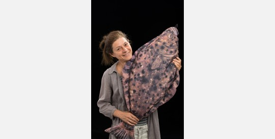

Biography
Geneviève Lacroix leads the Ecosystem Modelling (ECOMOD) team and is a marine ecosystem modeller specializing in the development and application of biogeochemical, individual-based, and larval transport models. Her research focuses on assessing the impacts of anthropogenic pressures and natural variability on marine ecosystems in regions including the North Sea, the Southern Ocean, the Gulf of Guinea, and Vietnam.
Experience
- Royal Belgian Institute of Natural Sciences | Brussels, Belgium
Ecosystem modeller | 2002-Current (Head of ECOMOD since 2018) - University of Liège | Liège, Belgium
Research assistant (50%) and Contractual researcher (50%) | 1995-2002 - Université Pierre et Marie Curie | Villefranche-sur-mer, France
PhD researcher (EU ‘Pierre et Marie Curie’ Fellowship) | 1992-1995 - University of Liège | Liège, Belgium
Research assistant | 1990-1992
Education
- Université Pierre et Marie Curie | Villefranche-sur-mer, France
PhD in Biological Oceanology and Marine Environment - EU Label | 1998 - Université Liège | Liège, Belgique
- PhD in Sciences (Oceanology) - EU Label | 1998
- European (ERASMUS) DEA in Marine Environment Modelling | 1990
- PhD in Sciences (Oceanology) - EU Label | 1998
- Université Catholique de Louvain | Louvain-La-Neuve, Belgique
- Aggregation for the Superior Secondary Teaching | 1989
- Master in Physics | 1989
Projects at RBINS
Ongoing
- ReCAP - Regional scale assessment of the land ocean continuum ecosystems vulnerability to anthropogenic pressure | 2020-2029
Funding: Belgian Science Policy – FED-tWIN2019-prf-008-ReCAP
Partners: RBINS-ECOMOD (Promoter), ULB - DE-HEAT - Natural analogues and system-scale modeling of marine enhanced silicate weathering | 2021-2025
Funding: Belgian Science Policy (RV/21/DEHEAT)
Partners: RBINS-ECOMOD (Coordinator), UAntwerpen, ULB - OUTFLOW - Quantifying the cOntribUTion of Fouling fauna to the Local carbon budget of an Offshore Wind farm | 2021-2025
Funding: Belgian Science Policy (BRAIN-Be 2.0) – B2/212/P1/OUTFLOW
Partners: RBINS-MARECO (Coordinator), UGent-ISOFYS, UGent-MARBIO - EcoMPV - Eco-designing marine photovoltaic installations | 2022-2025
Funding: FPS Economy (Energy Trabsition Funds)
Partners: RBINS-MARECO (Coordinator), UGhent, Tractebel, Jan De Nul, DEME - FOCCUS - Forecasting and observing the open-to-coastal ocean for Copernicus users | 2024-2026
Funding: EU Commission
Partners: HEREON (Coordination) + 18 partners (whose RBINS-MFC/ECOMOD) - SHRIMP-II - Application du modèle COHERENS à l’analyse du cycle de vie des crevettes et des huîtres | 2024-2028
Funding: This project is funded by the Directorate-General for Development Cooperation and Humanitarian Aid (DGD) through the CEBioS (Capacities for Biodiversity and Sustainable Development) program
Partners: RBINS-ECOMOD (Coordination), IRHOB - eDNA-OPTIMA - Optimized eDNA Methods for Accurate Biodiversity Assessment | 2025-2026
Funding: VLAIO
Partners: VLIZ (Coordination), EV-ILVO, KU Leuven - Subcontractors: Blue Cluster, RBINS-ECOMOD
Ended
Click to expand
- PNEC-Phaeocystis - Determinism of the Phaeocystis bloom and its consequences on the ecosystem of the eastern Channel and the southern Bight of the North Sea | 2002-2005
Funding: Programme National d’Environnement Côtier (France)
Partners: Université des Sciences et Technologies de Lille (Coordinator), IFREMER, ULB/RBINS-REMSEM • AMORE II - Advanced MOdeling and Research on Eutrophication: Study and modelling of the interaction between eutrophication and biological resources | 2002-2006 - AMORE II - Advanced MOdeling and Research on Eutrophication: Study and modelling of the interaction between eutrophication and biological resources | 2002-2006
Funding: Belgian Science Policy – EV/36/19B
Partners: ULB (Coordinator), VUB, RBINS-REMSEM, NIOO, Oregon State University (subcontractor), Observatoire Océanologique de Banuyls - LITEAU 2 - Integrated modelling of the nutrient transfer from Seine, Somme and Scheldt basins into the Channel and the southern North Sea | 2004-2006
Funding: Ministère de l’Ecologie et du Développement Durable (FR) – N° 19-G/2003, Accord N°CV 04000018
Partners: IFREMER (Coordinator), Université Pierre et Marie Curie, ULB (RBINS-REMSEM subcontrcator) - BELPROD - Primary production in the Belgian waters | 2005-2008
Funding: Belgian Science Policy (Complementary researcher)
Partners: RBINS-REMSEM (Promoter) - COMETS - Cluster Eutrophication “COMunicating advanced progress in coastal Eutrophication To Stake holders and the scientific community” | 2005-2006
Funding: Belgian Science Policy, supporting actions “Clusters” – OA/00/014
Partners: ULB-ESA (Coordinator), ULB-LOCGE, VUB-ANCH, VUB-EKOL, ULg-CO2, RBINS-REMSEM, UG-Protistology - AMORE III - Advanced MOdeling and Research on Eutrophication: Combined effects of hydroclimate and human activities on the coastal ecosystem | 2006-2011
Funding: Belgian Science Policy – SD/NS/03A & SD/NS/03B
Partners: ULB (Coordinator), ILVO, RBINS-REMSEM (Co-Promoter), UMH - WESTBANKS - Understanding benthic, pelagic and air-borne ecosystem interactions in shallow coastal seas | 2006-2011
Funding: Belgian Science Policy – SD/BN/01A & SD/BN/01B
Partners: UGent (Coordinator), KULeuven (RBINS-REMSEM subcontractor), INBO, NIOO-CEME, VLIZ - SOLEMOD - Modelling the impact of the physical and biological environment on the recruitment of Solea solea fish larvae | 2007-2010
Funding: Belgian Science Policy (Research Action) – MO/36/018
Partners: RBINS-REMSEM (Promoter) - ECOOP - European COastal shelf-sea OPerational Observing and forecasting system | 2007-2010
Funding: EU-FP6-2005-Global-4 – N°036355
Partners: DMI-DK (Coordinator), 72 partners - CoBiOS - Coastal Biomass Observatory Services | 2011-2013
Funding: EU-FP7-SPACE-2010-1 – Grant Agreement ID: 263295
Partners: STICHTING VU-VUMC (Coordinator), 8 partners (whose RBINS-REMSEM, Promoter) - B-FishConnect - Modeling and prediction of the impact of the interaction between oceanographical and biological factors on larval recruitment and population connectivity in flatfish | 2013-2016
Funding: Fonds Wetenschappelijk Onderzoek – Vlaanderen (FWO) – G.0702.13N
Partners: KULeuven (Coordinator), ILVO, RBINS-REMSEM (Promoter) - EMoSEM - Ecosystem Models as Support to Eutrophication Management in the North Atlantic Ocean | 2013-2015
Funding: EU-FP7, ERANET SEAS-ERA, Belgian Science Policy – Contract N° SD/ER/11
Partners: RBINS-REMSEM (Coordinator), ULB, IFREMER, Université Sorbonne, IMR (PT) - JELLYMOD - Modelling gelatinous zooplankton dynamics and diversity in the Southern North Sea | 2013-2015
Funding: Belgian Science Policy (Complementary researcher)
Partners: RBINS-REMSEM (Promoter) - UNDINE - Understanding the influence of man-made structures on the ecosystem functions of the North Sea | 2015-2017
Funding: Oil & Gas UK with the INSITE – INfluence of man-made Structures In the Ecosystem – fund
Partners: AWI (Coordinator), RBINS-MARECO, CEFAS, WUR - EDULIS - Offshore mussel farming in windfarms | 2017-2019
Funding: Private funding facilitated by Flemish and European funding EMFF
Partners: Ghent University (Coordinator), ILVO, Belwind, Brevisco, C-Power, Colruyt Group, DEME group, RBINS-MUMM - Oyster restoration – Feasibility study for the facilitating of a flat oyster colonisation (Ostrea edulis) | 2017-2018
Funding: Environmental compensation fund – DG5/MM/HV/17005
Partners: RBINS-MARECO - GAP2 - Specific scientific modelling support for impact calculation of eutrophication measures for the River Basin Management Plan 2021 (2022-2027 management period) for the European Water Framework Directive 2000/60/EC | 2018-2020
Funding: Belgian FPS Health, Food chain safety and Environment, CONVENTION MAR/KRW/2018/01
Partners: RBINS-MUMM - Water ballast - Ecologische studie Same Risk Area inzake ballastwater België en Nederland | 2018
Funding: Ministerie van Infrastructuur en Waterstaat (NL) Zaaknr. 31136193 and SFP Mobilité et Transports (BE) Nr 4500539510
Partners: RBINS-ECOMOD (Coordinator), GIMARIS (NL) - Scrubbers - Potential impact of wash water effluents from scrubbers on water acidification in the southern North Sea | 2019-2020
Funding: Federal Public Service Mobility and Transports (BE) – Contract N°4500624430
Partners: RBINS-ECOMOD (Promoter) - SYMAPA - Synergy between Mariculture & Passive Fisheries | 2019-2022
Funding: Blue cluster, VLAIO – HBC.2019.0068
Partners: Brevisco (Coordinator), Colruyt Group, At Sea Nova, Vlaamse Visveiling, ILVO, RBINS-ECOMOD (Promoter) - FORCOAST - Earth Observation Services for Fishery, Bivalves Mariculture and Oysterground Restoration along European Coasts | 2019-2022
Funding: EU-H2020-SPACE-2019 – Grant Agreement number 870465
Partners: Deltares (Coordinator), 21 partners (whose RBINS-ECOMOD, Promoter) - CLIMDIS - Management of the water quality in Vietnamese coastal waters impacted by CLIMate change and human induced DISasters using a marine modelling tool | 2019-2024
Funding: Belgian Science Policy (Bilateral Vietnam) – BL/36/VT43
Partners: RBINS-ECOMOD (Coordinator), IMAR (Vietnam) - DISARM - Dumpsites of munitions: Integrated Science Approach to Risk and Management | 2020-2023
Funding: Fonds Wetenschappelijk Onderzoek – Vlaanderen (FWO) – S003719N
Partners: VLIZ (Coordinator), Antwerp Maritime Academy, UGent, UAntwerpen, RMA, RBINS-ECOCHEM - COST-SEA-UNICORN - Unifying Approaches to Marine Connectivity for improved Resource Management for the Seas | 2020-2024
Funding: EU – COST ACTION CA19107
Partners: Université de Montpellier (Coodinator) + 72 partners (whose RBINS-ECOMOD) - ZERO-impact - Automatische monitoring van biodiversiteit in de Noordzee via eDNA | 2021-2023
Funding: EFMZV (Europees Fonds voor Maritieme Zaken en Visserij)
Partners: ILVO (Coordinator), RBINS-ATECO - MarineSPOTS - Marine Solar POtential and Technology Study | 2021-2023
Funding: FPS Economy (Energy transition fund)
Partners: KULeuven (Coordinator), IMEC, UHasselt, RBINS-ECOMOD (Promoter) - Paardenmarkt - Feasibility study for a risk assessment tool for the Paardenmarkt | 2021-2023
Funding: FPS Health, Food chain safety and Environment – Nr 4500778700
Partners: RBINS-ECOMOD (Promoter) - BARFISH - Distributie en migratie van de commerciële visbestanden i.e. van tong in de Britse wateren | 2022-2023
Funding: EU Brexit Adjustment Reserve
Partners: ILVO (coordinator) - RBINS-ECOMOD subcontractor
Publications
Peer reviewed
2024
- Sintondji W.S., Sohou Z., Baetens K., Lacroix G., Fiogbé E.D. (2024) Growth and reproduction of the shrimp population in a lagoon system in southern Benin (west Africa). Crustaceana 97(1-2), 61-82. DOI: 10.1163/15685403-bja10354
- Barbut L., Lehuta S., Volckaert F.A.M., Lacroix G. (2024) Lessons from the calibration and sensitivity analysis of a fish larval transport model. MEPS 731: 67-88. https://doi.org/10.3354/meps14536
- Vinh Duy Vu, Hai Minh Nguyen, Saheed Puthan Purayil, Geneviève Lacroix, Duong Thanh Nguyen. (2024) Seasonal variation of hydrodynamics in the Cat Ba - Ha Long coastal area (Viet Nam): Results of COHERENS Model. Regional Studies in Marine Science, 80:103874. https://doi.org/10.1016/j.rsma.2024.103874
- Amoussou Sylvain Gozingan, Zacharie Sohou, Katrijn Baetens, Frédéric Bonou, Ezinvi Baloïtcha, Olivier Gourgue, Hugo Romanelli, Arthur Capet, Geneviève Lacroix. (2024) A 3D numerical baroclinic application of the COHERENS model in the Gulf of Guinea, West Africa. Regional Studies in Marine Science, 79: 103811. https://doi.org/10.1016/j.rsma.2024.103811
- Nasah Suciati, Yudi Haditiar, Geneviève Lacroix, Haekal Azief Haridhi, Chitra Octavina, Maria Ulfah, Muhammad Nanda, Ichsan Setiawan. (2024) Utilization of Cloud Computing for Water Quality Monitoring in the Northern Waters of Aceh. 2024. Journal of Physics: Conference Series 2916 012018. doi: 10,1088/1742-6596/2916/1/012018
- Chitra Octavina, Maghfirah, Geneviève Lacroix, Nasah Suciati, Muhammad Fajar, Nurul Hidayatul Syufi, Haekal Azief Haridhi, Yudi Haditiar. (2024) Spatial Analysis of Plankton Distribution in Northern Waters of Aceh: an indicator of marine environmental quality. BIO Web of Conferences 156, 02005. https://doi.org/10.1051/bioconf/202515602005
2023
- Sonja Maria van Leeuwen, Hermann Lenhart, Theo C. Prins, Anouk Blauw, Xavier Desmit, Liam Fernand, Rene Friedland, Onur Kerimoglu, Geneviève Lacroix, Annelotte Van Der Linden, Alain Lefebvre, Johan Van Der Molen, Martin Plus, Itzel Ruvalcaba Baroni, Tiago Silva, Christoph Stegert, Tineke A Troost and Lauriane Vilmin. 2023. Deriving pre-eutrophic conditions from an ensemble model approach for the North-West European Seas. Frontiers in Marine Science 10:1129951. Doi: 10.3389/fmars.2023.1129951
- Sintondji, S., Sohou, Z., Goussanou, A., Godome, T., Baetens, K., Lacroix, G., & Fiogbé, E. (2023). Distribution model of shrimp species in Lake Nokoué, southern Benin, West Africa. Crustaceana 96(7), 605-625. Doi: 10.1163/15685403-bja10304
- Stechele B., Barbut L., Lacroix G., van Duren L.A., Van Lancker V., Degraer S., Montereale Gavazzi G., Bossier P., Declercq A.M., Nevejan N. (2023). Northern Europe’s suitability for offshore European flat oyster (Ostrea edulis) habitat restoration based on population dynamics. Frontiers in Marine Science, Section Marine Ecosystem Ecology. Vol. 10. https://doi.org/10.3389/fmars.2023.1224346
2022
- van de Wolfshaar K.E., Barbut L., Lacroix G. (2022) From spawning to first-year recruitment: the fate of juvenile sole growth and survival under future climate conditions in the North Sea. ICES Journal of Marine Science, 79(2): 495-505 – Doi: 10.1093/icesjms/fsab025
- Dulière V., Guillaumot C., Lacroix G., Saucede T., López-Farran Z., Danis B., Schön I., Baetens K. (2022) Dispersal models alert on the risk of non-native species introduction by Ballast water in protected areas from the Western Antarctic Peninsula. Diversity and distributions, 28: 649-666. Doi: 10.1111/ddi.13464
- Stechele B., van der Zande D., Alvera Azcárate A., Delbare D., Lacroix G., Nevejan N. (2022) Biological site suitability for exposed self-regulating cultivation of blue mussel (Mytilus edulis): a Belgian case study. Aquacultural Engineering 98 (102264). Doi: 10.1016/j.aquaeng.2022.102264
- Sintondji S.W., Gozingan A.S., Sohou Z., Taymans M., Baetens K., Lacroix G., Fiogbé E.D. 2022. Prediction of the distribution of shrimp species found in southern Benin through the lake Nokoué-Ocean complex. 2022. Journal of Aquaculture, Marine Biology & Ecology, JAMBE-116. Doi: 10.37722/JAMBE.2022201
- Sintondji S.W., Sohou Z., Baetens K., Lacroix G., Fiogbé E.D. 2022. Characterization of a West African coastal lagoon system: Case of Lake Nokoué with its inlet (Cotonou, South Benin). Ecologies 2022, 3, 467-479. Doi: 10.3390/ecologies3040033, https://www.mdpi.com/2673-4133/3/4/33
2021
- Paoletti S., Bekaert K., Barbut L., Lacroix G., Volckaert F.A.M., Hostens K. (2021) Validating a biophysical dispersal model with the early life-history traits of common sole (Solea solea L.). PLoS ONE 16(9): e0257709 – Doi: 10.1371/journal.pone.0257709
2020
- Barbut L., Vastenhoud B., Vigin L., Degrear S., Volckaert F.A.M., Lacroix G. (2020) The proportion of flatfish recruitment in the North Sea potentially affected by offshore windfarms. ICES Journal of Marine Science 77(3): 1277-1237 – Doi: 10.1093/icesjms/fsz050
2019
- Dulière V., Gypens N., Lancelot C., Luyten P., Lacroix G. (2019) Origin of nitrogen in the English Channel and Southern Bight of the North Sea ecosystems. Hydrobiologia 845: 13-33 – Doi: 10.1007/s10750-017-3419-5
- Barbut L., Groot Crego C., Delerue-Ricard S., Vandamme S., Volckaert F.A.M., Lacroix G. (2019) How larval traits of six flatfish species impact connectivity. Limnology and Oceanography 64:1150-1171 – Doi:10.1002/lno.11104
- Degraer S., Van Lancker V., Van Dijk T.A.G.P., Birchenough S.N.R., De Witte B., Elliott M., Le Bot S., Reiss H., Stelzenmüller V., Van Gaever S., Balian E., Cox D., Hernandez F., Lacroix G., Lindeboom H., Reubens J., Soetaert K. (2019) Interdisciplinary science to support North Sea marine management: lessons learned and future demands. Hydrobiologia 845: 1-11 – Doi: 10.1007/s10750-019-04109-9
2018
- Lacroix G., Barbut L., Volckaert F.A.M. (2018) Complex response of projected sea temperature and w ind change on flatfish dispersal. Global Change Biology, 24:85-100 – Doi: 10.1111/gcb.13915
- Ménesguen A., Desmit X., Dulière V., Lacroix G., Thouvenin B., Thieu V., Dussauze M. (2018) How to avoid eutrophication in coastal seas? A new approach to derive river-specific combined nitrate and phosphate maximum concentrations. Science of the Total Environment 628-629: 400-414 – Doi: 10.1016/j.scitotenv.2018.02.025
- Maar M., Butenschon M., Daewel U., Eggert A., Fan W., Hjollo S., Hufnagl M., Huret M., Ji R., Lacroix G., Peck M., Radtke H., Sailley S., Sinerchia M., Skogen M., Travers-Trolet M., Troost T., van de Wolfshaar K. (2018) Lower trophic level complexity mediates responses to top-down 1 forcing: Insights from a comparative modelling approach. Ecological Modelling, 376: 54-67 – Doi: 10.1016/j.ecolmodel.2018.03.003
- Desmit X., Thieu V., Billen G., Campuzano F., Dulière V., Garnier J., Lassaletta L., Ménesguen A., Neves R., Pinto L., Silvestre M., Sobrinho J., Lacroix G. (2018) Reducing marine eutrophication may require a paradigmatic change. Science of the Total Environment 635:1444-1466 – Doi: 10.1016/j.scitotenv.2018.04.181
- Ménesguen A. and Lacroix G. (2018) Modelling the marine eutrophication: a review. Science of the Total environment 636: 339-354 – Doi: 10.1016/j.scitotenv.2018.04.183
1998-2017
Click to expand
- Lacroix G., Nival P. (1998) Influence of Meteorological Variability on Primary Production Dynamics in the Ligurian Sea (NW Med Sea) with a 1D Hydrodynamic/Biological Model. Journal of Marine Systems, 16: 23-50 – Doi: 10.1016/S0924-7963(97)00098-5
- Grégoire M., Lacroix G. (2001) Study of the oxygen budget of the Black Sea waters using a 3D coupled hydrodynamical-biogeochemical model. Journal of Marine Systems. 31: 175-202 – Doi: 10.1016/S0924-7963(01)00052-5
- Lacroix G., Grégoire M. (2002) Revisited ecosystem model (MODECOGeL) of the Ligurian Sea: seasonal and interannual variability due to atmospheric forcing. Journal of Marine Systems, 37(4): 229-258 – Doi: 10.1016/S0924-7963(02)00190-2
- Borges A. V., Djenidi S., Lacroix G., Théate J., Delille B. and Frankignoulle M. (2003) Atmospheric CO2 flux from mangrove surrounding waters. Geophysical Research Letters, 30(11): 1558 – Doi: 10.1029/2003GL017143
- Grégoire M., Lacroix G. (2003) Exchange processes and nitrogen cycling on the shelf and continental slope of the Black Sea basin. Global Biogeochemical Cycles, Vol. 17, No 2: 1073 – Doi:10.1029/2002GB001882
- Delhez E.J.M., G. Lacroix and E. Deleersnijder (2004) The age as a diagnostic of the dynamics of marine ecosystem models, Ocean Dynamics, 54: 221-231 – Doi: 10.1007/s10236-003-0075-2
- Lacroix G., Ruddick K., Ozer J., Lancelot C. (2004) Modelling the impact of the Scheldt and Rhine/Meuse plumes on the salinity distribution in Belgian waters (Southern North Sea). Journal of Sea Research, 52: 149-163 – Doi: 10/1016/j.seares.2004.01.003
- Nezlin N.P., Lacroix G., Kostianoy A.G., Djenidi S. (2004) Remotely sensed seasonal dynamics of phytoplankton in the Ligurian Sea in 1997-1999. Journal of Geophysical Research, Vol. 109. C07103 – Doi: 10.1029/2000JC000628
- Skliris N., Lacroix G., Djenidi S. (2004) Effects of extreme meteorological conditions on coastal dynamics near a submarine canyon. Continental Shelf Research 24(9): 1033-1045 – Doi: 10.1016/j.csr.2004.02.012
- Lancelot C, Spitz Y, Gypens N, Ruddick K, Becquevort S, Rousseau V, Lacroix G, Billen G. (2005) Modelling diatom and Phaeocystis blooms and nutrient cycles in the Southern Bight of the North Sea: the MIRO model. Marine Ecology Progress Series 289 : 63-78 – Doi: 10.3354/meps289063
- Magri Hoeltzener S., Brasseur P., Lacroix G. (2005) Data assimilation in a marine ecosystem model of the Ligurian Sea. Comptes Rendus - Geoscience 2005/09, 337(12): 1065-1074 – Doi: 10.1016/j.crte.2005.05.004
- Gypens N., Lacroix G. and Lancelot C. (2007) Causes of variability in diatom and Phaeocystis blooms in Belgian coastal waters between 1989 and 2003: a model study. Journal of Sea Research, 57(1): 19-35 – Doi: 10.1016/j.seares.2006.07.004
- Lacroix G., Ruddick K., Park Y., Gypens N., Lancelot C. (2007) Validation of the 3D biogeochemical model MIRO&CO with field nutrient and phytoplankton data and MERIS-derived surface chlorophyll a images. Journal of Marine Systems, 64(1-4): 66-88 – Doi: 10.1016/j.jmarsys.2006.01.010
- Lacroix G., Ruddick K., Gypens N., Lancelot C. (2007) Modelling the relative impact of rivers (Scheldt/Rhine/Seine) and Western Channel waters on the nutrient and diatoms/Phaeocystis distributions in Belgian waters (Southern North Sea). Continental Shelf Research, 27(10-11): 1422-1446 – Doi: 10.1016/j.csr.2007.01.013
- Lenhart H-J., Mills D.K., Baretta-Bekker H., van Leeuwen S.M., van der Molen J., Baretta J.W., Blaas M., Desmit X., Kühn W., Lacroix G., Los H.J., Ménesguen A., Neves R., Proctor R., Ruardij P., Skogen M.D., Vanhoutte-Brunier A., Villars M.T., Wakelin S.L. (2010) Predicting the consequences of nutrient reduction on the eutrophication status of the North Sea. Journal of Marine Systems, 81: 148-170 – Doi: 10.1016/j.jmarsys.2009.12.014
- Park Y., Ruddick K., Lacroix G. (2010) Detection of algal blooms in European waters based on satellite chlorophyll data from MERIS and MODIS. International Journal of Remote Sensing. 31(24): 6567-6583 – Doi: 10.1080/01431161003801369
- Savina M., Lacroix G., Ruddick K. (2010) Modelling the transport of common sole larvae in the Southern North Sea: influence of hydrodynamics and larval vertical movements. Journal of Marine Systems, 81: 86-98 – Doi: 10.1016/j.jmarsys.2009.12.008
- Sirjacobs D., Alvera-Azcárate A., Barth A., Lacroix G., Park Y., Nechad B., Ruddick K., Beckers J-M. (2011) Cloud filling of ocean color and sea surface temperature remote sensing products over the Southern North Sea by the Data Interpolating Empirical Orthogonal Functions methodology. Journal of Sea Research. 65(1): 114-130 – Doi: 10.1016/j.seares.2010.08.002
- Arndt S., Lacroix G., Gypens N., Regnier P., Lancelot C. (2011) Nutrient dynamics and phytoplankton development along an estuary-coastal zone continuum: A model study. Journal of Marine Systems 84(3-4): 49-66 – Doi: 10.1016/j.jmarsys.2010.08.005
- Gypens N., Lacroix G., Lancelot C., Borges A. (2011) Seasonal and inter-annual variability of air-sea CO2 fluxes and seawater carbonate chemistry in the Southern Bight of the North Sea. Progress in Oceanography 88: 59-77 – Doi: 10.1016/j.pocean.2010.11.004
- Lacroix G., Maes G.E., Bolle L.J., Volckaert F.A.M. (2013) Modelling dispersal dynamics of the early life stages of a marine flatfish (Solea solea L.). Journal of Sea Research 84:13-25 – Doi: 10.1016/j.seares.2012.07.010
- Vandamme S.G., Maes G.E., Raeymaekers J.A., Cottonie K., Imsland A.K., Hellemans B., Lacroix G., Mac Aoidh E., Martinsohn J.T., Martinez P., Robbens J., Vilas R., Volckaert F.A. (2014) Regional environmental pressure influence population differentiation in turbot (Scophthalmus máximum). Molecular Ecology 23(6): 618-636 – Doi: 10/1111/mec.12628
- Desmit X., Ruddick K., Lacroix G. (2015) Salinity predicts the distribution of chlorophyll a spring peak in the southern North Sea continental waters. Journal of Sea Research 103:59-74 – Doi: 10.1016/j.seares.2015.02.007
- Hufnagl M., Payne M., Lacroix G., Bolle L., Daewel U., Dickey-Collas M., Gerkema T., Huret M., Janssen F., Kreus M., Pätsch J., Pohlmann T., Ruardij P., Schrum C., Skogen M., Tiessen M., Petitgas P., van Beek J., Van der Veer H., Callies U. (2017) Variation that can be expected when using particle tracking models in connectivity studies. Journal of Sea research 127: 133-149 – Doi: 10.1016/j.seares.2017.04.009
Peer-reviewed books
- Ruddick K., Lacroix G., Park Y., Rousseau V., De Cauwer V., Sterckx S. (2008). Overview of ocean colour: theoretical background, sensors and applicability to detection and monitoring of harmful algal blooms (capabilities and limitations), in: Babin M. et al. (Ed.) Real-time coastal observing systems for marine ecosystem dynamics and harmful algal blooms: Theory, instrumentation and modelling. Oceanographic Methodology Series. UNESCO. Paris. ISBN 978-92-3-104042-9. Pp: 331-383.
- Ruddick K., Lacroix G., Lancelot C., Nechad B., Park Y., Peters S., Van Mol B. (2008). Optical remote sensing of the North Sea. In Barale V., & Gade M. (Ed.), Remote sensing of the European Seas. Springer-Verlag. ISBN: 978-1-4020-6771-6. pp: 79-90.
Scientific contribution to collaborative publications
- Lancelot C., Lacroix G., Gypens N., Ruddick K. (2006) Ecological modelling as a scientific tool for assessing eutrophication and mitigation strategies for Belgian coastal waters. In Rousseau V., Lancelot C. and Cox D. (Ed). Current status of Eutrophication in the Belgian Coastal Zone. Presses Universitaires de Bruxelles. pp. 91-110.
- Ruddick K., Lacroix G. (2006) Hydrodynamics and meteorology of the Belgian Coastal zone. In Rousseau V., Lancelot C. and Cox D. (Ed). Current status of Eutrophication in the Belgian Coastal Zone. Presses Universitaires de Bruxelles. pp. 1-15.
- Lacroix G., McCloghrie P., Huret M., North E.W. (2009) Hydrodynamic models. In Manual of Recommended Practices for Modelling Physical – Biological Interactions during Fish Early Life. Pp. 3-8. Ed. By E.W. North, A. Gallego and P. Petitgas. ICES Cooperative Research Report No. 295. 111 pp.
- Paris C.B., Irisson J-O., Lacroix G., Fiksen O., Leis J.M., Mullon C. (2009) Application 2: Connectivity. In Manual of Recommended Practices for Modelling Physical – Biological Interactions during Fish Early Life. Pp. 63-76. Ed. by E.W. North, A. Gallego and P. Petitgas. ICES Cooperative Research Report No. 295. 111 pp.
Vulgarisation publications, radio, tv, press and internet
- Press publication: “Chaînes de vie dans la grande bleue. Tout en modèles et simulations pour mieux comprendre et gérer les ressources marines”. Interview Kristell Van Hove, Le Matin, 7 Sept. 1999
- Design of an information leaflet for the European (ERASMUS) DEA in Marine Environment Modelling, 1999
- Design and update of a web site for the European (ERASMUS) DEA in Marine Environment Modelling, 1999
- Design of a presentation leaflet for studies in Oceanology at the University of Liège, 2000
- Participation to the organisation of the exhibition “océanographie/festival de l’image sous-marine” at University of Liège, Nov. 2000
- Participation to the organisation of the “printemps des Sciences” at University of Liège, March 2001 and March 2002
- Involvment in scientific vulgarisation films (STARESO, Corse) and tv boradcasts about oceanology (RTBF, RTBF2, FR3) (1990-2002)
- Several contributions to the “15ème jour”, edited by the University of Liège, 1990-2002
- Lacroix et al., 2004. New study at MUMM: The Seine, Somme, Rhine and Meuse have also an influence on our marine waters. Press release (06/12/2004) and results published on the MUMM web site. Articles published in the local press (Le SOIR, La DH, De TIJD) and tv spot (VTM)
- Participation to the ‘open doors days’ on the Belgica (18/07/2005) – presentation ‘invloed van rivieren op zeewater’
- Lacroix et al., 2006. Impact of the sunken ship ECE on the marine environment. Press release (03/02/06) and results published on the MUMM web site
- Radio broadcast “Semences de curieux” (PREMIERE, 21/01/2007 and 28/01/2007)
- TV interview “Recherche sur Phaeocystis” for the 19/20 France 3 Côte d’Opale (02/02/2007)
- Participation to the realisation of the web site “planeet Zee” [http://www.planeetzee.org/] (2008)
- Participation to the tv report “monitoring des éoliennes”, JT, RTL-TVI (Febr. 2009)
- Participation to the tv report “Algues nuisibles”, JT, RTL-TVI (10/08/2009)
- Interview “Plongée scientifique dans les parcs à éoliennes” Planète Première 12/05/2010 (RTBF radio)
- Participation to the tv report “l’influence des éoliennes sur les fonds marins”, JT, RTBF (13/05/2010)
- Participation to the radio broadcast “Plongée scientifique dans les parcs à éoliennes”, Transversales 12/06/2010 (RTBF radio)
- Interview about harmful algae (Radio Nantes, 21/09/2010)
- Design and update of the EMoSEM website http://odnature.naturalsciences.be/emosem/. 2013
- Webnews“The EMoSEM project” (05.07.2013)
- Design of a presentation leaflet for the EMoSEM project, http://odnature.naturalsciences.be/assets/users/emosem/flyer_emosem_july2013.pdf
- MUMM webnews“First prize for Valérie Dulière’s scientific poster at AMEMR symposium” (18.07.2013)
- Realisation of identification fiches for jellyfish observation in the North Sea (EN, FR et NL), http://www.mumm.ac.be/EN/Management/Nature/strandings.php
- Radio broadcasts “animaux de l’été qui piquent” (RTBF, LA PREMIERE). 1. Sequence “jellyfish”, Matin première, 31.07.2013, 2. Sequence “lesser weever”, Matin Première, 01.08.2013
- Addendum (2014) “Echouages et observations de méduses” à la brochure “Echouages” (NL),http://www.mumm.ac.be/EN/Management/Nature/strandings.php
- Webnews “Award for Léo Barbut’s scientific poster at Aquatic Science Meeting ASLO 2015” (21.04.2015)
- Belspo 2015. SSD la science pour un développement durable. Bilan d’un programme de recherche thématique et multidisciplinaire. AMORE-project (1997-2010). L’eutrophisation de la mer du Nord modélisée (p.56-58). Interview C. Lancelot and G. Lacroix by P. De Buyst
- Communiqué de presse: Expertise Scientifique Collective (ESCo) CNRS sur l’eutrophisation
- Press release « Y aura-t-il plus de soles en mer du Nord en raison du changement climatique ? » + radio, newspapers, webmedias (30.10.2017)
- Webnews “Will climate change lead to more sole in the North Sea?” (15.12.2017)
- Présentation des activités de modélisation dans la cadre de la visite de la délégation Shanghai (12.09.2018)
- News Water ballast (27.09.2019), Transport of organisms by ballast water: are Belgian and Dutch waters part of a Same Risk Area? – OD Nature News (naturalsciences.be) [https://odnaturenews.naturalsciences.be/post/759]
- Présentation des activités de modélisation pour le Ministre D. Clarinval (13.12.2019) https://naturalsciences.sharepoint.com/sites/AnotherDayAtTheOffice/SitePages/Minister-David-Clarinval-visited-our-Institute.aspx
- News Scrubber (13.05.2020), Does Washing of Exhaust Gases From Ships Contribute to Acidification of The Southern North Sea? | Royal Belgian Institute of Natural Sciences
- Press release SYMAPA (24.11.2022) Combi van passieve visserij en aquacultuur op zee stap dichter bij rendabele praktijk - ILVO Vlaanderen
- TESTEREP Magazine (17.05.2024) Nieuwe inzichten rond munitiestortplaats Paardenmarkt voor de Belgische kust
- Matin Libre (30.12.2024) Lancement des activités du Projet GTI-DNA_Shrimp: Vers la mise en place d’une base spécifique des crevettes pour une gestion durable
- CEBioS Policy Brief N°18 (03.02.2025) Les enjeux de la gestion durable des crevettes de la lagune Nokoué au Bénin - 2024/2025
- CEBioS news (03.02.2025) Policy brief on the challenges of sustainable management of shrimp from the Nokoué lagoon in Benin (FR)
Memberships
- Belgian representative in the working group “OSPAR Intersessional Correspondance Group on Eutrophication Modelling (ICG-EMO)” [from 2005]
- Belgian representative in the ICES “Working Group on Integrative, Physical-Biological and Ecosystem Modelling (WGIPEM)” (formerly WGPBI) [from 2008]
- Member of the Coordination Group of the International Research Group on Marine Connectivity (iMarCo) [from 2015]
Awards and Fellowships
Awards
- Lacroix G. 1990. Modélisation 1D d’un Système Biologique Couplé à un Modèle Hydrodynamique. 1st ”Forum des jeunes Océanographes” organised by IRMA, Liège (BE), June 1990. [2nd prize]
- Lacroix G. 1992. Résultats préliminaires d’un modèle couplé Hydrodynamique/écosystème pour une zone côtière Méditerranéenne. 2nd ”Forum des jeunes Océanographes” organised by IRMA, Liège (BE), April 1992. [3rd prize]
- Lacroix G., Nezlin N., Djenidi S. 2001. “Ecosystem response to the atmospheric forcing in the Ligurian Sea in 1997-1999”. 36th CIESM Congress, Monte-Carlo, Sep. 2001. [Best poster award]
- Magri S., Brasseur P., Lacroix G. 2002. Data assimilation in a marine ecosystem coupled to a mixed layer model of the upper ocean. Symposium International “En route vers GODAE”, Biarritz (FR), June 2002. [Poster award]
- Dulière V., Gypens N., Lancelot C., Luyten P., Desmit X., Lacroix G. 2014. Linking human activities to eutrophication along the river-ocean continuum with an ecological model. VLIZ Young Marine Scientists’s day 2014, Brugge (BE), 07 March 2014. [2nd prize]
- Dulière V., Kerckhof F., Lacroix G. 2014. A modelling approach to trace the origin of jellyfish swarms in the southern North Sea. Symposium “Advances in Marine Ecosystem Modelling Research (AMEMR 2014)”, Plymouth (UK), 30 June-03 July 2014.[First Prize poster]
- Barbut L., Delerue-Ricard S., Vanden Bavière A., Maes G., Robbens J., Volckaert F.A.M., Lacroix G. 2015. Integrating field data to parameterize a larval transport model of sole and improve knowledge on connectivity in the North Sea. ASLO, Granada (SP), 22-27 Feb. 2015.[Best poster award]
- Delerue-Ricard S., Stynen H., Barbut L., Glatczak D., Vanden Bavière A., Coscia I., Robbens J., Lacroix G., Volckaert F.A.M. No anonymity for fish: tracing sole juveniles arriving at the Belgian nursery combining genomics, otolith microchemistry and otolith shape analysis. North Sea Open Science Conference (NSOSC2016), Ostend (BE), 7-10 Nov. 2016. [1st prize]
Fellowship
- 1990: Travel grant IRMA (Institut de Recherches Marines et d’Interactions Air-mer, ULiège)
- 1990: Travel grant in the frame of EU summer school “Modelling of Marine Ecosystems” (EIASO), France
- 1990-1991: Bourse de perfectionnement du patrimoine
- 1992-1995: Marie Curie fellowship in the frame of “Marine Science and Technology” program